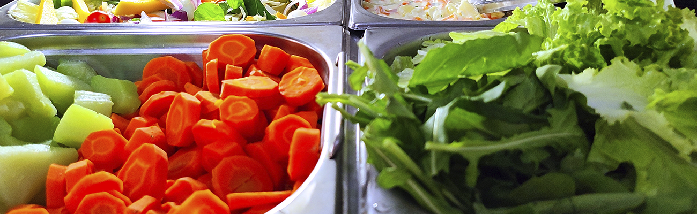
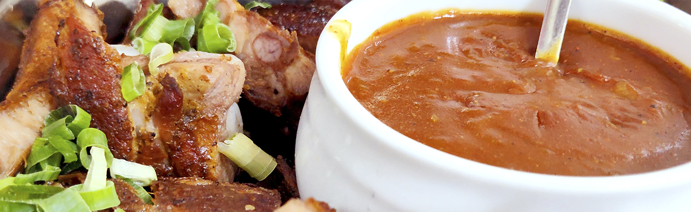

A picanha é um corte nobre de carne bovina, muito apreciado pela sua maciez e sabor intenso. Geralmente preparada na brasa, ela apresenta uma camada de gordura que derrete durante o cozimento, conferindo suculência e um toque defumado. Servida em fatias generosas, é perfeita para acompanhar farofa, vinagrete e uma boa cerveja.
O bife de contra filé é um corte suculento e macio, com uma fina camada de gordura que realça seu sabor. Grelhado ou frito, é ideal para quem aprecia uma carne bem temperada, que pode ser servida mal passada ou ao ponto. Com seu sabor robusto, combina perfeitamente com arroz, feijão e uma salada fresca.
O filé à milanesa é uma deliciosa opção que traz um bife empanado e frito até ficar dourado e crocante. O contraste entre a crocância da camada de farinha de rosca e a maciez da carne é irresistível. Geralmente acompanhado de arroz e purê de batata, esse prato é um verdadeiro conforto, perfeito para qualquer refeição.
O filé de frango é uma opção leve e versátil, que pode ser grelhada, assada ou frita. Com seu sabor suave, ele é ideal para temperos variados e combinações de acompanhamentos. É frequentemente servido com legumes salteados ou em uma salada, tornando-se uma escolha saudável e saborosa.
A linguiça toscana é uma iguaria repleta de sabor, feita com carne suína e temperos como alho e ervas. Ao ser grelhada, libera sucos aromáticos que envolvem o paladar em uma explosão de sabores. É perfeita para ser servida em um churrasco, acompanhada de pão, molho de pimenta e uma boa dose de chimichurri.
A omelete com muçarela e tomate é um prato simples, mas repleto de sabor. Feita com ovos batidos e recheada generosamente com muçarela derretida e tomates frescos, ela é uma escolha perfeita para o café da manhã ou um lanche leve. O resultado é uma omelete macia e aromática, que combina muito bem com ervas frescas e uma pitada de sal.